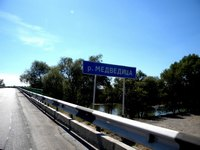
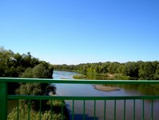
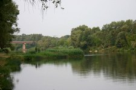

Река Медведица — живописная малая река Волгоградской области.
На берегах этой живописной реки можно приятно отдохнуть во время путешествий на машине по Волгоградской области
по трассе М6 Волгоград-Москва (Каспий)

Река Медведица
Описание
О реке
Медведица - левый приток Дона. Берет начало на западном склоне Приволжской возвышенности
на высоте около 300 м у села Бариново Кара-булакского района Саратовской области.
Название реки произошло по животным, жившим по берегам, что является распространенным в славянской гидронимики.
Когда-то по Медведице в период весеннего половодья сплавляли баржи, плоты, работали водяные мельницы.
В начале 60-х годов на ней были построены две малые ГЭС ниже р. п. Красный Яр Жирновского района и у х. Владимировка
Михайловского района Волгоградской области.
Однако в настоящее время они утратили свое значение и законсервированы.
Медведица имеет рекреационное значение, является излюбленным маршрутом туристов-водников.
Фотографии
  
Расположение
 )
)
Расположение реки Медведица на интерактивной карте
Река медведица в Михайловском районе у трассы М6 расположена недалеко от Михайловки.
Если ехать с московского направления – после поворота на Михайловку нужно проехать мост через Медведицу
(около 5,5 километров) и после моста повернуть налево (приблизительно 600 метров) и проехать к реке.
Если ехать из Волгограда, то после поворота на Староселье нужно проехать 1,2 километра, повернуть направо и проехать к берегу реки.